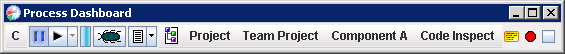
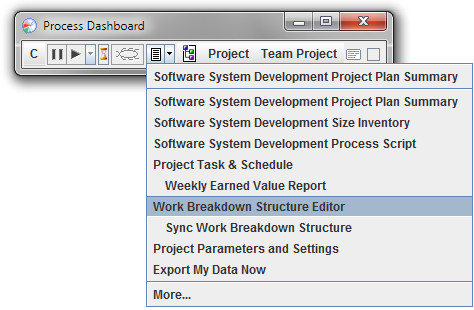
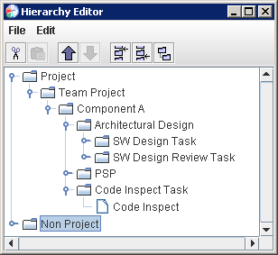

menu on the main process
dashboard window.
menu on the main process
dashboard window.With the team project launch complete, your dashboard will contain a list of project tasks for you to perform. These tasks appear underneath the team project in your dashboard hierarchy.

As you work on the project, your understanding of these tasks will grow, and you may need to alter your original plan. If you discover that a task is much larger or smaller than originally anticipated, you can change the estimate for the task by clicking on the Percent Spent indicator. (This is the blue or red bar that appears to the right of the play/pause button.) You can also edit time estimates by opening your earned value task & schedule plan, and changing the numbers in the PT (Planned Time) column.
Of course, it is also common to discover new tasks that need to be performed and changes to existing tasks. If you just need to create a simple task, you can click the Add Task button on the main dashboard toolbar. If you need to rename a task, move a task, subdivide a task, delete a task, create a component, or use a team workflow, click the script button and choose Work Breakdown Structure Editor.

You can make changes to the tasks in the Work Breakdown Structure, and when you save the changes they will appear in your personal plan.
Some team leaders may choose to lock down the work breakdown structure. In that case, you may be able to look at the Work Breakdown Structure, but will not be able to make changes. If so, you may need to ask your team leader or planning manager to make changes on your behalf.
Another approach is also possible, but is less convenient: you may
define new project tasks and refine existing project tasks using the
dashboard Hierarchy
Editor. You can open the Hierarchy Editor by selecting Hierarchy
from the menu on the main process
dashboard window.

Under the node for the team project, you will find nodes representing components of the overall system your team is building (for example, Component A in the picture above). Underneath those nodes, you will find nodes that represent tasks you need to perform. In the picture above, the nodes SW Design, SW Design Review, PSP, and Code Inspect represent tasks that were assigned to you.
Tasks can be created and nested to any depth. To add new tasks or refine existing tasks, follow these steps:
As you edit tasks in your team project, you will notice several restrictions: